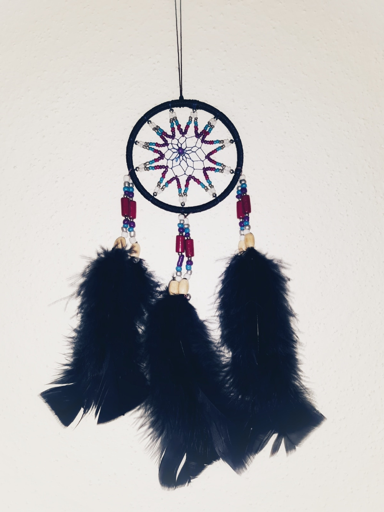

2017년 1월 13일 데뷔한 드림캐쳐 컴퍼니 소속의 한국인 6명, 중국인 1명의 7인조 걸그룹이다.
신비하고 몽환적이며 청초한 이미지의 콘셉트를 표방하는 그룹으로, 그룹명의 의미는 '악몽을 잡아주는 꿈의 요정들'이다.
기존의 걸그룹들과는 차별화된 방향(참신한 스토리텔링)과 독특한 콘셉트(메탈적인 사운드+어두운 분위기+여자 아이돌)의 조합으로 국내와 해외에서 상당히 좋은 평가를 받고 있다.
심볼 로고는 드림캐쳐의 전형적인 형태(원형 그물망과 그 밑에 달린 깃털 장식 등)에서 따온 모양이고, 데뷔 싱글 '악몽'을 비롯한 대부분의 앨범 디자인에 모티브 중 하나로 적용되었다.